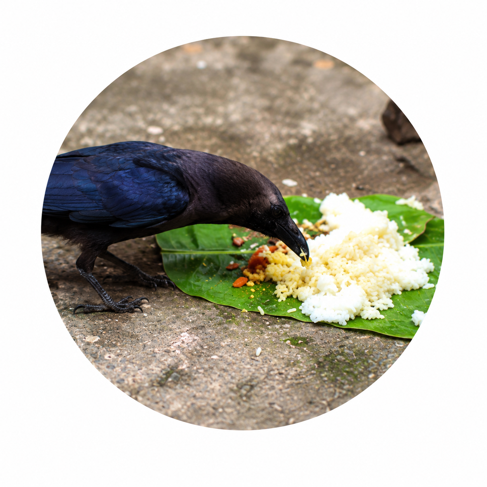

Discover the impact of Saturn (Shani) in your birth chart and how it influences your life path.
Please provide accurate birth details for precise Saturn Afflictions analysis.

Transit periods of Saturn that may bring challenges and growth.
Currently you are under the influence of
Your Saturn period insights at a glance
You are Aries Moon sign. Currently, you are undergoing the first phase of Sade Sati (7 1/2 period of Saturn).
You shall find this phase to be a challenging one. During this period, you may be prone to fatigue, which would act as a constraint for you to march ahead. Completing your tasks on time may not be easily possible. More stress can lead to insecure feelings. You need to plan and execute everything, which would help you to overcome the obstacles. You may feel that things are running against you in your career life. You may not be able to derive a good name despite your hard efforts. There are chances for health issues such as pain in legs and thighs. You might get provoked for even small things; unnecessary confusion can disturb your sleeping hours leading to late night sleep. On the other hand, you shall travel to temples bringing you the much-wanted relief. You would soon realize and be able to distinguish between what is right and wrong. There are chances of a job change, as you may not be satisfied with the atmosphere prevailing in your workplace. It is essential to observe patience, as it would guide you to prevent further mishaps.
Worship Lord Hanuman on Saturdays. Offer prayers to Lord Ganesha.
Home, family, emotions and inner stability
Saturn is transiting the 4th house from your Moon sign. It is called as Artha Ashtama Sani and is not considered as a favorable transit as per the ancient Vedic text.
The 4th house signifies your residence, domestic environment, and material & physical comforts. Saturn entering this house would bring disturbances in your domestic environment and comforts.
During this period, there will be a change in your emotional feelings both outwardly and inwardly (the mind). You want to share knowledge with others and are moved by a desire to help people. Producing peace and tranquility in the hearts and minds of fellow beings will bring happiness and solace in this period. Open a path to true spiritual awareness to reduce the intensity of your frustration and disappointments. Your jocular disposition would help you keep you in good spirit. You will use intellect and logic when expressing feelings which can leave you exhausted.
You will spend money on auspicious work, visiting spiritual shrines. There could be constant dissatisfaction with your life. Your words would be your enemy and could tarnish your image. Avoid loose and unnecessary talks during this period. Speculative trading could bring loss.
Do not make promises you may not be able to keep up. Too much of anything will turn out poorly. Keep things light and don't get into heavy conversations with anyone who is overly opinionated.
On the positive side, you would get the opportunity of purchasing assets or gains through paternal side property. Changes are indicated in private life, domestic environment, property, and vehicles. Get ready to accept changes in life.
Philanthropy; giving alms, practicing some fasting, devotion, pilgrimage to shrines could reduce the impact of the Saturn. Performing or participating in Poojas/Homa/Chanting can provide relief. Worshipping Shiva on 13th Moon at Pradosham time and fasting on Saturday will help you sail through this period.
Relationships, marriage and partnerships
The word 'Sade Sati' literally means 'seven and half' and denotes the 7 1/2 year period of Sani, the planet Saturn. While Saturn remains the most feared planet, this period, in particular, is considered astrologically, as a time of trials and tribulations.
Everyone has 3 phases of Saturn's influence during Sade Sati. This is a time of special, intense focus from Saturn. Saturn has a job to do of triggering some of your karmic lessons and helping dissolve your ego. Each of the 3 phases is approximately 2 1/2 years long, so the entire period of Sade Sati is 7 1/2 years. At any given point of time, one quarter of the population is experiencing Sade Sati.
When Saturn is passing one sign before your natal Moon (also called 12th Sign counting from Moon Sign as 1 and counting in a clockwise direction in South Indian style chart layout).
When Saturn is over your natal Moon sign.
When Saturn is one sign after your natal Moon sign (also called 2nd sign counting from Moon as 1 and counting in a clockwise direction in South Indian style chart layout).
Transformation, hidden matters and spiritual growth
Saturn transiting the 8th house from your Moon sign can bring a period of transformation and unexpected changes. The 8th house signifies longevity, inheritance, joint finances, hidden matters, obstacles, and spiritual transformation.
During this period, you may experience delays or sudden changes in personal and financial matters. Matters related to shared assets, inheritance, loans, or family finances may require additional attention. It is advisable to avoid unnecessary risks and handle important decisions with patience.
This transit may also increase your interest in spirituality, research, and understanding the deeper aspects of life. Difficult situations can teach you patience and help you develop greater emotional strength and maturity.
Maintain discipline and avoid overthinking unexpected situations. Proper planning, patience, and a calm approach can help you manage this period effectively.
On the positive side, this period can bring greater self-awareness, inner strength, and spiritual growth. You may become more capable of handling challenging situations and accepting important changes in life.
Worship Lord Shiva and Saturn, especially on Saturdays. Practice charity, meditation, and disciplined living. Helping the needy and elderly and offering prayers can help reduce the difficulties associated with Saturn's influence.
Get expert guidance for your Saturn period
Simple yet effective practices to harmonize with Saturn's energy.
On Saturdays
Propitiate Saturn on Saturdays, the day he rules with this simple Saturn mantra:

On Saturdays or Tuesdays
Invoke Hanuman, the archetype who rules Saturn, on Saturdays or Tuesdays with this simple mantra for Hanuman:
Personalized guidance and powerful remedies to balance Saturn's influence
and
bring stability, peace, and growth into your life.
Understand how the current Saturn phase may influence your life.
Seek strength and relief while facing difficult Saturn influences.
Get customized remedies and guidance aligned with your unique horoscope.
The impact of Saturn is high, when it transits 12th, 1st, and 2nd house (Sade Sati), 4th house (Artha Ashtama Sani), and 8th house (Ashtama Sani) from the Moon in your birth chart. The position of Saturn in these houses can result in malefic effects and may make you undergo many hardships in life, only to impart patience, maturity, discipline, and hard work.
“ The impact of Saturn is intense in these positions and can teach you tough lessons and help you lead a better life. The effects of Sade Sati is malefic, though not as malefic as Ashtama and Artha Ashtama Sani. ”
Sade Sati denotes the 7½ year period of Saturn from your natal Moon. During this period, Saturn may pose you several trials and tribulations to dissolve your ego and teach lessons based on your karma. This period is divided into 3 phases based on the position of Saturn in 12th, 1st, or 2nd house from the Moon in your birth chart.
Ashtama Sani denotes the transit of Saturn in the 8th house from your natal Moon. The 2.5-year period of Saturn in this position can cause health issues, financial constraints, obstacles in career, dangers, sudden losses, high expenditure, worry due to children, and unexpected quarrels/separation from family or friends.
Artha Ashtama Sani denotes the transit of Saturn in the 4th house from your natal Moon. During these 2.5 years, Saturn can give you many challenges and disturb domestic harmony.
Saturn's wisdom helps you transform life's challenges into growth
and brings clarity, balance and strength to create a better tomorrow.
In-depth analysis of Saturn's position in your birth chart and its impact on your life path.
Understand the root causes of delays, obstacles and hardships and find clear ways to overcome them.
Get customized Vedic remedies, mantras and practical solutions to reduce malefic effects and invite blessings.
Align with Saturn's energy to build patience, discipline and consistency for long-term success and stability.
Balance past karma, make better decisions and create a more harmonious and purposeful life.
Gain clarity, confidence and peace of mind knowing you are on the right path.
Find answers to common questions about Saturn, its effects and remedies.
Saturn (Shani) is the planet of karma, discipline and justice. It teaches valuable life lessons and shapes our character through challenges and responsibilities.
Saturn is a slow-moving planet and spends about 2.5 years in each zodiac sign.
The main challenging periods are Sade Sati (7½ years), Ashtama Sani (2.5 years) and Artha Ashtama Sani (2.5 years). These periods bring tests and lessons based on karma.
Yes. With the right remedies, disciplined efforts, charity, prayers and positive actions, the challenging effects of Saturn can be reduced.
No. Saturn is not always harmful. It brings stability, maturity, success and long-term growth when it is well-placed in a birth chart.